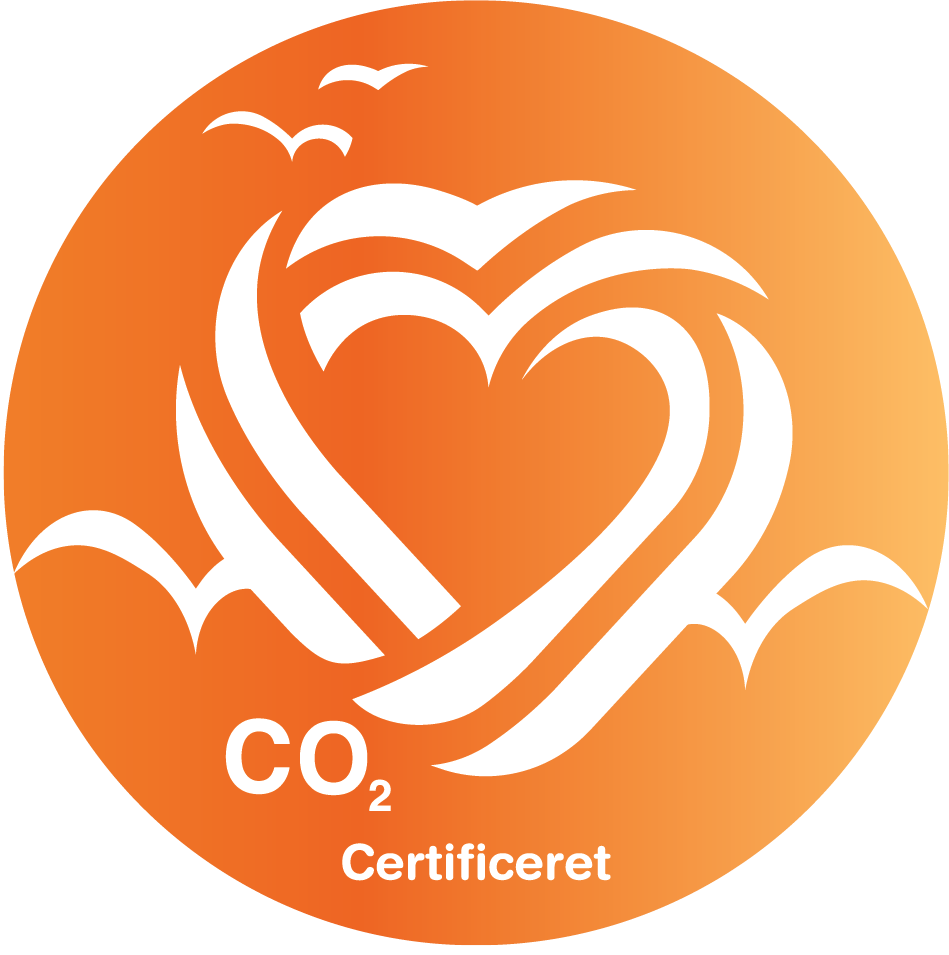

YourFootPrint eksisterer pga. et brændende ønske om at gøre det nemt, gennemsigtigt og overskueligt at beregne sit Co2 footprint, og på den måde bidrage til at mindske Co2 udledning.
YourFootPrint startede som en idé da founder Benjamin, besluttede sig for at beregne hans eget Co2 footprint, på Stålbækgård. Rapporten blev lavet tilbage i 2020 og er et flagskib for platformen.
Visionen fra YourFootPrints side er at dele erfaringer og viden, således at den grønne omstilling bliver lettere for små landbrug og på sigt landbruget generelt.
YourFootPrints vision er ikke bare tomme buzzord, men at vidensgrundlaget og beregningerne bagved er både gennemsigtige og overskuelige, for landmænd og forbrugere.
Læs flagskibs rapporten her (Link).
Læs mere om vidensgrundlaget her (Link).
Your Footprint´s beregninger baseres på tilgangen fra GHG Protocol Agricultural Guidance – Interpreting the Corporate Accounting and Raporting Standard for the agricultural sector. Det betyder, at vi behandler udledninger (emissioner) og optagelse af Drivhusgasser (GHG). Det gør det muligt, at få en fuldstændig oversigt over, ens drivhusgas-emissioner, hvilket gør værktøjet til et brugbart management værktøj, i forhold til din drivshusgas-emission.
Beregneren er baseres på følgende fire principper;
Fuldstændighed
Gennemskuelighed
Præcision
Relevans
Det betyder, at værktøjet er baseret på de nyeste tilgængelige videnskabelige undersøgelser (under creative commonen license 4.0), som behandler Danske forhold, i forhold til de enkelte dyrs udledninger i enten stadier eller i livscyklusanalyser, hvor vi bestræber os på at holde os til de enkelte dyrs emissioner, uden de videnskabelige livscyklusanalyser, hvor dyret, dets foder, markbruget, maskiner, transport, m.m. er inkluderet.
Det gør vi for at gøre udregningerne så præcise som muligt, i forhold til det enkelte landbrugs CO2-aftryk i ækvivalenter (ækv.). Det samme gør sig gældende for markbruget, hvor vi bestræber os på, kun at bruge data som kan henholdes til hektarer og under Danske forhold. Der kan dog ske undtagelser ved markbruget, men da accepterer vi kun videnskabelige undersøgelser, hvis den er gældende for lignende klimatiske forhold.
For nuværende er æglæggende høns (på gården) og svins (på gården) udledninger baseret på livscyklusanalyser, hvor kvæg er baseret på undersøgelser i stadier.
At arbejde ud fra de ovenstående 4 principper, gør at vi hele tiden udvikler på CO2 ækv. beregneren, ved hjælp af de nyeste tilgængelige videnskabelige undersøgelser. Det betyder også, at du kan blive bedt om, at opdatere dine data i Your Footprint og at der løbende implementeres nye målepunkter, som vil gøre CO2 ækv. udregningerne mere detaljerede. Det gør, at du som bruger, dine kunder og hvem der ellers måtte være interesserede får et mere detaljeret indblik i CO2 ækv. emissionerne fra dit landbrug og hvordan drivhusgasemissionerne kan blive reduceret.
Til udregningerne af CO2 ækv. emissionerne inddrages data som brændstof (diesel) forbrug, jordtyper, landskabsmanagement, gødningsmanagement, foder, herunder import og salg, vandforbrug, elektricitet, og flere andre, hvor der løbende kommer nye målepunkter ind i udregningerne. Det gør at du får nemmere ved, at vise dine kunder et reelt billede af, hvad du gør for at reducere din klima- og miljøbelastning og samtidig får du os som fagfolk indenfor landbrugs- og miljøvidenskab, med til at vejlede dig i at reducere din klimabelastning og optimere på dit ressourceforbrug.
For omregning til CO2 ækv. Har vi ved kulstoflagring eller erosion (tab) anvendt formlen 1 kg C multipliceret med 12/44 = 3,66 kg CO2 og ved opgørelse af emission af lattergas (N2O) og metan (CH4), henholdsvis brugt emissionfaktorerne 298 og 25, for at omregne dem til CO2 ækvivalenter (eq).
Det skal også siges, at vi har valgt en konservativ tilgang til brugen af dataen bag udregningerne, så hvis man fx ser på udtagning af tørvejord/lavbundsjorde (organogene jorde), så er der et spænd i denne carbon sink på 24-35 tons CO2 der bindes/optages i systemet. På grund af de klimatiske forhold og fejlmargin der er i sådanne undersøgelser, har vi valgt at sætte værdien på 24 tons CO2 der bindes. Sådan har vi valgt at håndtere al anden data, sådan så vi kan forholde os til de klimatiske forhold, som vi har i Danmark og de fejlmarginer, som de videnskabelige undersøgelser måtte indeholde. På den måde undgår du, at deklarere noget om dine produkter, som ikke holder stik i virkeligheden.
Følgende kilder er indtil videre brugt til udregningerne i Your Footprint;
Det er ikke det mest præcise data, vi har været I stand til at få fat i, i denne tidlige version af beregneren.
På nuværende tidspunkt er data vedrørende fjerkræ beregnet ud fra en livscyklusanalyse, hvor vi har alle data fra input på gården til dyret enten har lagt sit æg, eller skal slagtes.
Dette gør at det ikke er de mest præcise data ud fra din besægtning. Hvilket gør at vi ikke er i stand til at reducere klimabelastningen og optimere resssource forbruget.
Data på kvæg er beregnet ud fra gennemsnitlige værdier, ved henholdsvis mælkeproduktion og kødkvægsproduktion.
Her har vi taget data beregnet for CO2 eq emissioner for gyllehåndtering, stald og livsytringer, samt påvirkningen kvæget måtte have på landskabsforvaltningen.
Hertil spørger vi ind til fodersammensætningen, således at vi kan få et billede af dine dyrs faktiske CO2 eq emission.
Efterhånden som vi har fået information omkring, hvilke kvægracer vores brugere har inkludere vi matematiske udregninger for vedligehold, tilvækst, drægtighed, kælvning, sygdom, mælkeproduktion og slutfedning, i forhold til næringsbehov og udskillelse af fæces ved de forskellige racer, samt udledning ved forskellige staldssystemer/afgræsningssystemer og "ikke" blot videnskabelige undersøgelsers resultater.
Herved får vi endnu mere præcise data, for de faktiske forhold på lige præcis din bedrift, som holdes op imod de nyeste videnskabelige undersøgelser gældende for Danmark.
På nuværende tidspunkt er data beregnet ud fra en videnskabelig undersøgelse, hvor man har set på svin i en livscyklus analyse, hvor alt er inkluderet og bestemt ud fra per 1 kg levende vægt. Derfor er det, at du som bruger oplyser vægten på dine svin så retvisende som muligt, af stor vigtighed.
Da data for nuværende er udregnet på baggrund af en livscyklus analyse, kan vi ikke optimere på din bedrift.
Dog efterhånden som vi får oplysninger omkring de svin, som forefindes på bedrifterne, som er i vores systemet tilføjer vi mere nøjagtige beregninger, hvor vi regner mere med næringsbehov og udskillelse af fæces, i forhold til vedligehold, tilvækst, drægtighed og faring, samt de forskellige staldsystemer/foldsystemer.
Herved får vi endnu mere præcise data, for de faktiske forhold på lige præcis din bedrift, som holdes op imod de nyeste videnskabelige undersøgelser gældende for Danmark.